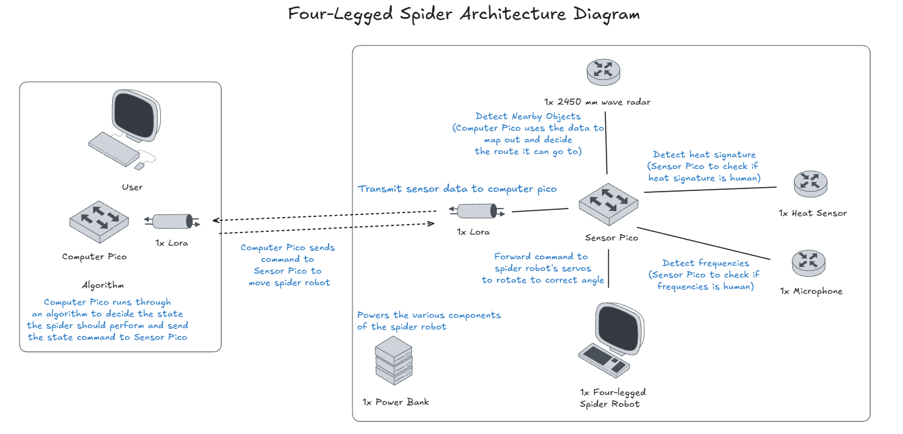

Autonomous 4-Legged Spider Robot
A Year 2, Trimester 1 Embedded Systems project from 2025 focused on a semi-autonomous four-legged rescue robot that combined multi-servo locomotion, sensor-driven decision-making, and long-range LoRa communication for navigation in post-disaster environments.

This project was built for INF2004 Embedded Systems and framed as a semi-autonomous search-and-rescue robot for collapsed or hazardous spaces. The idea was to create a four-legged spider-inspired robot that could move through unstable environments, detect obstacles, identify signs of survivors, and report findings back to a human operator rather than acting as a fully independent robot.
The system architecture split responsibilities between a computer pico and a sensor pico, with LoRa modules carrying commands and sensor data between them. The robot combined 8-servo locomotion with a mmWave radar, heat sensor, and microphone so it could keep moving, scan for obstacles, verify possible human presence, and reroute when it encountered dead ends or blocked paths.
A lot of the design work was centered on state machines rather than ad hoc motion code. The proposal documented dedicated servo states, obstacle-handling flow, pathfinding logic, and a multi-sensor confirmation process so the robot could reduce false positives before escalating a potential survivor alert.
Project scope
- Designed a semi-autonomous four-legged spider robot intended for post-disaster search-and-rescue scenarios rather than simple remote-control movement.
- Combined obstacle detection, pathfinding, survivor verification, and operator communication into one embedded system.
- Engineered the robot around 8 servo motors, multiple sensing modules, and explicit state-driven behavior for locomotion and rerouting.
Locomotion and control
- Used a servo state machine to manage standby, directional movement, turning, custom walk, temperature walk, and backtracking behavior.
- Structured the navigation logic around statechart diagrams so obstacle handling and movement transitions remained explicit and testable.
- Treated locomotion as a stability problem, not just a motion problem, by coordinating state transitions around how the spider would traverse debris-filled spaces.
Sensors and communication
- Integrated mmWave radar for obstacle detection and path assessment, with radar driver logic documented around scanning, parsing, classification, and alert states.
- Used heat and sound sensing together so the robot could reduce false positives before escalating a human-detection event.
- Connected the sensor and control layers through LoRa, allowing sensor findings and movement commands to move between the two Pico boards.
My contribution
- Worked on the sensing and communication side of the robot, especially the mmWave radar and LoRa sensor path.
- Contributed around temperature and heat-related sensing flow, plus how sensor information was transmitted back through the communication layer.
- Helped on the part of the system that connected environmental detection to robot decision-making, rather than only on the servo actuation side.
Interfaces and verification
- The proposal documented UART-based radar and LoRa communication, plus I2C-based sensor and motor-related interfaces.
- Verification targets included obstacle-detection latency, LoRa communication range and delay, heat-detection accuracy, and end-to-end message transmission timing.
- The report also surfaced real embedded limitations such as radar reflection noise, blind zones, surface-dependent stability, and communication failure handling.
Tools and concepts
Project material
This page is based on the embedded project proposal and its design diagrams, driver notes, and verification sections.